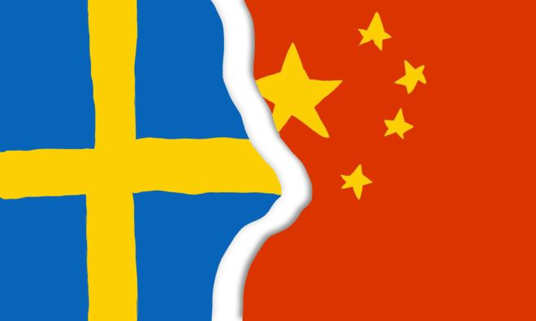

Sensedge《闻摘》2018.09.30
本板块推文本板块推文精选国外主流媒体报道，由编者翻译转载，并提供报道来源网址 (由于某些原因，网站可能无法打开)，推文内容不代表编者主张。本板块一周一推，力 求客观，致力于为大众打造观察中国的新视野。精选国外主流媒体报道，由编者翻译转 载，并提供报道来源网址(由于某些原因，网站可能无法打开)，推文内容不代表编者主 张。本板块一周一推，力求客观，致力于为大众打造观察中国的新视野。
央视女记者英国论闹场遭逮捕 中国使馆要求英主办者道歉
10月3日 联合早报
中国驻英国使馆前晚发表声明称，孔琳琳是在“提问表达观点”，却遭到“百般阻挠”，甚至“人身侵犯”，这在一贯标榜言论自由的英国，是完全不能接受的，要求会议组织者向中国记者道歉。
北京——在过去两年里，据估计人数有6000万的中国基督徒已经感受到一个近来开始展露自信的政府的力量，这个政府竭力要让他们的信仰就范。
当局拆除了数百座新教教堂，拆掉了教堂尖塔上的十字架，并驱逐教众。天主教徒也遭受过当局的类似措施，但就在上周末，中国政府采取了不同的做法，达成了一项被梵蒂冈官员称为历史性突破的外交协议——这是北京方面首次正式承认教宗对中国天主教会的权威。
不过，北京通过协议达到的目标似乎与拆除教堂一样：对基督教的迅速传播有更多的控制。基督教自16世纪以来就在中国获得了永久存在。
“我们正处于一个转折点，”香港中文大学神学院院长邢福增说。“这届政府认为，过去政府过于松懈，现在想加大压力。”
根据上周六签署的协议，教宗方济各承认了北京任命的七名主教的正当性，以此换来了教宗对中国未来的主教任命上的发言权。
执政的中国共产党把与梵蒂冈的妥协视为朝着消除地下教会迈出的一步，拒绝承认中国权威的几代中国天主教徒们一直在地下教会做礼拜。教宗现在承认了由共产党控制和认可的官方天主教会的主教和神职人员，地下教会可能就没有存在的理由了。
这是政府加强对社会各方面控制的广泛努力之一，自2012年习近平出任中共中央总书记以来，中国政府就一直在加大这种努力。习近平已经主持了一场影响深远的反腐败运动，以及打击民间组织和独立新闻机构的行动，但他对待宗教的态度则较有针对性。
随着许多中国人在有时令人困惑的、混乱的经济变革时期寻找价值观和传统，习近平已在鼓励像佛教和道教这样的一些宗教的发展，尽管他同时采取措施，确保这些宗教遵循党的路线。上个月，有1500年历史的中国著名寺庙少林寺首次升起了国旗。
习近平对伊斯兰教的立场要强硬得多。当局把治理少数民族面临的挑战与伊斯兰教联系在一起，中国遥远西部的少数民族中有些成员已接受了分裂主义或恐怖组织的宣传。中国政府正在拘禁大量的穆斯林，以对他们进行再教育，因此形成了自毛泽东时代以来规模最大的一些拘禁营。
基督教带来了一系列不同的挑战。基督教在中国最大城市和最富裕地区的白领专业人士中传播得最快，他们中的许多人在政府控制之外的地下教会做礼拜，政府的做法反映了不同的基督教宗派的不同命运。
400年前，天主教让基督宗教首次在中国扎根，西方军队迫使中国允许传教士进入中国后，天主教受益匪浅。这个全球教会投入了大量人力和金钱，在中国各地开设了教堂、学校和医院。
但是，共产党在1949年取得政权后，天主教在中国建立起来的等级制度成了一个弱点。共产党政府在1951年断绝了与梵蒂冈的外交关系，将数百名外国神父和主教驱逐出境。政府控制了教会自上而下的系统，开始任命那些遵从它的设想——建立一个没有外国联系的中国教会——的神职人员。
从那以后，天主教在中国的发展陷入停滞。天主教徒的数量只是随着人口的增长有所增长，从1949年的300万增加到今天的1000万左右，使得天主教成为中国官方认可的宗教中最小的一个。
这些信徒中有数百万仍在顽固地抵制政府的控制。在中国的某些地方，整个县的天主教徒都去地下教会做礼拜，共产党控制的教堂里几乎空无一人，这些教堂的神职人员无人理睬。
梵蒂冈和北京重归于好后，所有这一切都可能发生变化。
中国的几名地下主教、包括两名在中国天主教信仰最坚定的地区深受欢迎的主教，预计将把他们的位置让出来，给中国政府在过去10年里任命的主教——教宗已同意承认这些主教。作为交换，教宗在任命新主教方面将能起一定的作用。中国有近100名主教和高级神职人员，其中包括地下的和政府批准的，目前还有十几个职位空缺。
神职人员的任命今后怎么办目前尚不清楚。中梵双方都称上周六签署的文件为初步协议，也都没有公布有关细节。但一个非正式的否决系统似乎会是一种可能。梵蒂冈可以拒绝中国当局提出的候选人，尽管这会主要通过私下磋商而非正式表态。
从长远来看，北京可能与梵蒂冈恢复外交关系。
一些中国天主教徒认为，这对一个无法适应时代变化的教会有所帮助。例如，中国正在快速城市化，但许多农村的天主教徒进城务工时却发现，城里几乎见不到教会的外展。官方教会与地下教会统一之后，这个问题可能会得到解决。
“我觉得，如果协议有助于把教会统一起来，就是一件好事，”居住在中国东部城市福州的天主教徒作家游永信（音）说。“如果教宗确信，他可以通过这项协议让优秀的主教得到任命的话，那么我们只能相信他会这样做。”
的确，如果像公开宣布的那样执行的话，协议将让梵蒂冈在中国的共产党控制下的教会任命神职人员上起正式作用，这将是近70年来的首次。这是政府做出的重大让步。相比之下，北京不让藏传佛教的精神领袖达赖喇嘛在僧侣或寺庙住持任命上有任何发言权。
尽管如此，协议还是让许多中国天主教徒感到震惊。
中国北部城市正定一个地下教会的自封主教董关华(Paul Dong Guanhua)说，他想不出北京为什么要签署可能加强教会力量的协议。
“好吧，你说有协议，就有协议，”他在接受电话采访时说。“但我觉得这有点离谱，我想知道，有多少天主教徒会同意这个决定。”
记者无法联系到郭锡进等其他地下神职人员置评，郭锡进是据称按照协议必须让位的主教之一。今年早些时候，郭锡进在接受《纽约时报》采访时说，如果教宗要求他辞职，他将辞职。
梵蒂冈还需要争取到台湾和香港那些持怀疑态度的天主教徒的支持，新罕布什尔大学(University of New Hampshire)研究北京与梵蒂冈关系的政治学教授李道明(Lawrence C. Reardon)说。
许多人，比如香港退休枢机主教陈日君(Joseph Zen)，已对与北京达成的协议直言不讳地表示反对，他指出，共产党不可信赖。
“这是他们跳的舞的第一步，他们会一直跳下去，”李道明说。“这也是大中华天主教会的和解。”
对中国的新教徒们来说，情况完全不同。中国的新教徒人数已经从1949年估计的100万，上升到现在的5000万以上，部分原因是，不存在教会等级制度，这反而能使其迅速发展，即使是在遭受迫害的时候。
在没有可以谈判的外交对手的情况下，中国当局采取了一种不同的做法：用拆除部分教堂的方式，向其他的众多教堂传递一个信息。
这种做法始于2014年，当时浙江省拆毁了一座大的新教教堂，并开始拆除数百座其他教堂的尖顶。到2016年，浙江的1200多座主要是新教的教堂都已被砍顶，这项行动看起来是希望削弱该宗教的显眼形象。
步调似乎在今年有所加快，中国其他地区的一些教堂要么关闭，要么被拆毁，其中包括山西省的金灯堂，以及北京的锡安教会，后者是一个未注册的大型教会，以其韩语和英语礼拜而闻名。
政府还禁止在网上销售《圣经》，并呼吁建设中国特色基督教神学思想。
政府的目标似乎是迫使新教教会向政府登记。“传递的信息是，教会不能独立，”邢福增说。“这是谁来控制的问题。”

范冰冰缴8.8亿免牢狱 震慑中国富豪的税与罚
10月3日 BBC中文网
范冰冰的微博在沉寂了123天后，再次更新，发布一篇《致歉信》，承认在影片《大轰炸》和其他一些合同中出现利用“拆分合同”等逃税问题。
在这条微博发出的几个小时前，中国官方通讯社援引税务部门称，对范冰冰及其担任法人的企业追缴2.55亿元，滞纳金0.33亿元，以及各种罚款近6亿元。
“靴子”终于落地，这意味着范冰冰连缴带罚共需上交近9亿元。中国税务部门称，如果她能如期缴纳，将不予追究刑事责任。
不仅是范冰冰，整个影视行业也将面临查税的寒冬。中国国家税务局称，要规范影视行业税收秩序，2018年12月31日前自查自纠并到主管税务机关补缴税款的，将免予行政处罚，不予罚款，否则将依法依规严肃问责或追究法律责任。
范冰冰逃税2.55亿元不用负刑责
近9亿元的高额罚单是如何形成的？西南财经大学财税学院教授李建军向BBC中文解释，这笔钱由追缴税款、滞纳金和罚款三部分组成。
- 追缴税款达2.55亿元，指的是范冰冰及其企业应缴而未缴的税款；
- 滞纳金0.33亿元，可以“简单理解为所欠税款的利息”，按天计算；
- 罚款近6亿元，则是对范冰冰不同偷逃税行为进行处罚的钱，比如对“阴阳合同”隐瞒真实收入处以4倍罚款，达2.4亿元；对利用工作室账户隐匿个人报酬处以3倍罚款，达到2.39亿元。
如果范冰冰如期缴纳罚款和补缴税款，将被免除刑事责任。今年以前，范冰冰已经连续五年蝉联福布斯“中国名人榜”收入冠军，去年收入近3亿元人民币。因此补缴起近9亿元，似乎并不困难。
因此，不少网友质疑称，为何偷逃税2.55亿元的范冰冰不必负刑事责任，而当年偷逃税1400万的刘晓庆却入狱一年多。
“刑法的相关罪名和构成条件发生了重大变化，与涉案金额没有关系。”北京紫华律师事务所律师钱列阳曾担任刘晓庆案的刑辩律师，他向BBC中文解释称，刘晓庆案时用的还是1997年的刑法，叫偷税罪，2009年刑法修正案改成逃税罪了。
钱列阳称，从“偷税罪”到“逃税罪”，修改后有行政处罚前置程序，即如果初次逃税，税务机关进行行政处罚（滞纳金、罚款等）后，就不追究刑事责任，也就不算犯罪；以前一旦发现逃税行为，公安部门就可以直接介入抓人。
李建军分析，在涉税案件中，首先判断性质，再判断情节。范冰冰案中她只是偷逃税款，补缴齐税款及高额罚金后，可以减轻危害程度，保证公共利益，因此可以不予追责；而如果存在伪造票据、甚至抗税行为，则性质严重得多，很有可能会被追刑事责任。
“在刑法上有销毁会计凭证罪来追究刑事责任。”钱列阳举例，范冰冰经纪人牟某广在税务机关调查时，因为指使公司员工隐匿、故意销毁涉案公司会计凭证、会计账簿，阻挠税务机关依法调查，最终牟某广等人已被公安机关依法采取强制措施。
地方政府是否与范冰冰“合谋”偷逃税？
范冰冰案牵出的不仅是影视行业人士，地方税务部门也难逃其咎。
新华社引用中国税务局及江苏省税务局称，因范冰冰案，原无锡市地方税务局、原无锡市地方税务局第六分局等主管税务机关的有关负责人和相关责任人员将被问责。
“一些地方政府，可能会因为扶持地方某个产业，而对企业纳税睁一只眼闭一只眼。”李建军解释，此前影视行业流行工作室包税制的潜规则，通过定期定额征收方式少缴稅，然而这种“包税制”是税务部门对财务核算困难的个体户实行的简易征收方式，将工作室算入此列，显然有疏漏。
无锡之外，另一个集聚影视公司的城市是位于新疆、靠近哈萨克斯坦的霍尔果斯。在霍尔果斯市注册的公司5年免征公司税的优惠待遇，并且在第二个5年公司税减半。
正因如此，霍尔果斯市注册的公司数量去年猛增到14472家，比前一年增长了4倍。不过这些注册的公司在当地并没有开展任何业务，其中90%的公司属于轻资产行业，其中不少都是影视公司，也包括范冰冰名下的公司。
钱列阳称，如果是地方政府出台的“土政策”使范冰冰可以避税，那么她确实没有责任，只需依照国家法律取消这些政策即可，但现在来看又不止是简单避税，问责相关税务官员，可能牵出渎职甚至受贿等案件。
新华社文章中援引中国国家税务总局，警告对出现严重偷逃税行为且未依法履职的地区税务机关负责人及相关人员，将根据不同情形依法依规严肃问责或追究法律责任。
政府向影视行业喊话
范冰冰事发后，整个影视行业也面临“严冬”——对在2018年12月31日前自查自纠并到主管税务机关补缴税款的影视企业及相关从业人员，免予行政处罚，不予罚款；对个别拒不纠正的依法严肃处理。
李建军认为这种方式比较合理，整个影视行业涉及企业、个人众多，挨个筛查不太可能，通过"限期补缴免罚款"，可以用最低成本，最大程度弥补公共利益损失。
“另一个层面，涉及税收公平性的问题。”李建军解释，范冰冰等明星偷逃税，那意味着依法纳税者相对多缴了税。中国个人所得税常被称为“工薪税”，多纳税的就是这部分人。税制改革的逻辑就是，严格执行税法，应缴尽缴，如此就可以在保证公共收入的前提下适当降低税率。
钱列阳表示，刘晓庆案使整个影视行业提高了纳税意识，并在合同中实施代扣代缴义务；范冰冰案则可以打击影视行业"阴阳合同"等偷逃税的潜规则，再次提升行业的纳税意识。
香港中文大学商学院国际贸易及中国企业课程主任李兆波表示，这种情况并不罕见，付一笔巨款而避免牢狱之灾，在香港的案件中也出现过。而系统性偷逃税不仅出现在娱乐行业，在中国其他各个行业都存在，比如电子支付在中国已经非常普遍但在一些行业依然拒绝电子支付和银行转账，明显是想偷逃税。
更多资讯
10月1日
BBC中文网
大闹英国保守党年会 中国央视女记者打人被捕
（在英国保守党年会期间，一名中国中央电视台女记者在一场有关香港问题的研讨会上与在场人士发生言语冲突，并动手打人，被警方逮捕。事后，中国驻英大使馆和中央电视台都发表声明抗议。）
《英雄烈士保护法》后首个烈士纪念日 中共高调缅怀英烈传承红色基因
（中共中央政法委下属的微信公号“长安剑”昨天发表文章称，英烈保护法的出台，再次传递了明确的信号：英烈保护并不只是烈士亲属的家事，而应是依法处理的国事，更应是人人关心的天下事。英烈不容得演绎、戏说，亮出红牌保护的是民族的历史精神。）
路透社
Chinese bishops to attend Vatican synod for first time
中国主教第一次参加梵蒂冈会议
（梵蒂冈周一表示，来自中国的天主教主教将首次参加本周开始的梵蒂冈主要会议，这是罗马教廷与北京达成一项具有里程碑意义的协议后解冻的第一个具体迹象。）10月2日
路透社
China condemns U.S. for South China Sea freedom of navigation operation
中国谴责美国对南海的航行自由行动
（中国周二表示愤怒，此前美国海军驱逐舰在有争议的南中国海声称在中国声称的岛屿附近航行，称它坚决反对一项称其威胁其主权的行动。）
China mounts publicity campaign to counter criticism on Xinjiang
中国开展宣传活动，反对对新疆的批评
（中国正在越来越复杂地批评其在新疆穆斯林地区的政策受到批评，在海外寻求外国媒体和在国外运行舆论，因为它试图发出更积极的信息。）
10月3日
BBC中文网
范冰冰缴8.8亿免牢狱 震慑中国富豪的税与罚
联合早报
央视女记者英国论坛闹场遭逮捕 中国使馆要求英主办者道歉
路透社
Hong Kong bishop fears Chinese Catholic 'suppression' to continue despite Vatican pact
香港主教担心，尽管有梵蒂冈协议，中国天主教徒的“镇压”仍在继续
10月4日
联合早报
以不方便为由 中方要求安倍访华计划改期
（有消息指，日本首相安倍晋三原定在《中日和平友好条约》生效40周年当天、即本月23日访华的计划被打乱，原因是中国政府以不方便为由提出改期。不过，其中原因尚不清楚。）
路透社
Pence accuses China of 'malign' campaign to undermine Trump
彭斯指责中国“恶毒”的运动破坏了特朗普
（美国副总统迈克彭斯周四强调华盛顿对北京的压力，指责中国在下个月的国会选举和南中国海的鲁莽军事行动之前，“恶毒”的努力破坏唐纳德特朗普总统。）
10月5日
BBC中文网
国际刑警组织主席孟宏伟在中国失踪 法国开启调查
FT亚洲总编续签证被拒 再引香港“中国大陆化”忧虑
（英国《金融时报》向BBC中文确认，香港政府早前拒绝香港外国记者会（FCC）署任主席马凯（Victor Mallet）续期工作签证的申请。FCC早前邀请香港民族党“召集人”陈浩天发表演讲，引起中国和香港政府不满。）10月6日
联合早报
被指影响美中期选举和总统选举 中国反驳彭斯对华种种指责
（中国外交部发言人华春莹周五清晨以答记者问方式，迅速对干预美国内政的说法表示坚决反对。她指彭斯的讲话“纯属捕风捉影、混淆是非、无中生有”。）
美智库报告：解放军现代化水平提升 中国大陆对台采取军事行动能力提升
（美国智库传统基金会昨天公布《2019年美国军力指数报告》，指出中国大陆统一台湾的努力不仅限于公开的军事手段，还包括法律战、舆论战与心理战的“三战”战略，以减损台湾抵抗的意志与美国支持台湾的意愿。）